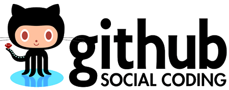
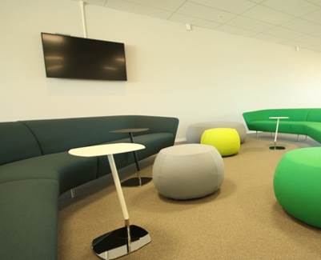
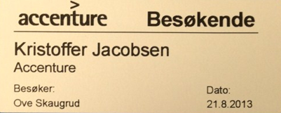
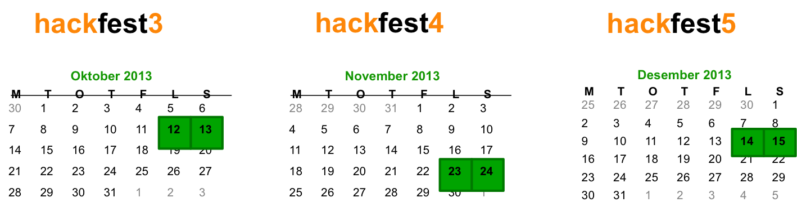

Facilitating
Intrapeneurship
in (larger) organizations
Software 2014, Oslo 27/02/2014
Agenda
- A little background (why)
- Intrapeneurship at Accenture (how)
- Results/Conclusion
A little background
(the why)
"Architecture, Development & Integration"
Software & Technology
Is our product
The challenge
Passion
+
Context
creating
ARENAS
for development, innovation and creativity
How?
Facilitating
Intrapeneurship
generating
a context
- Gather passionate people
- ..in a passionate, casual atmosphere
Enjoy synergies
Capacity Building
Acquiring knowledge
Building skills
Stimulating talent
Unhindered flow of creativity and innovation
Holding on to talent
Branding
Open Up
Be Visible
Attract Talent
Networking
Knowledge & Experience Sharing
Sales
Mitigating Risk -> Building Confidence
Leveraging New Technology
Triple Win Factor
The How
- Identify, support and recognize the enthusiasts
- Facilitate
- Stay open to outside impulses
Identify, Support, recognize
Facilitate
Lower the threshold for participation

Keep code centralized and easily accessible

Keep tasks organized and accessible
Hackfest #1

Use Case 1
Create applications & widgets for monitors in our open office space

Use Case 2
Create visitor registration system

Workshop @ NTNU
AngularJS, Bootstrap, NodeJS, MongoDB
Planning is crucial
https://go.accenture.com/hackfestX
Stay open
Results
- Klar endring i holdninger og engasjement
- Høyere tilfredsstilhet, mer attraktivt arbeidssted
- Apps som løser/støtter dagligdags oppgaver
- Tettere bånd mellom organisasjon og ansatte
- Kortere vei fra idé til realisering av prototype
- Bruk av teknologi fra Hackfester i 2 kundeprosjekter
- Riktig teknologi til riktig problemstilling
- Spennende prosjekt å jobbe på
Key Takeaways
Why
- TODO
- TODO
- TODO
How
- TODO
- TODO
- TODO
Results
- TODO
- TODO
- TODO